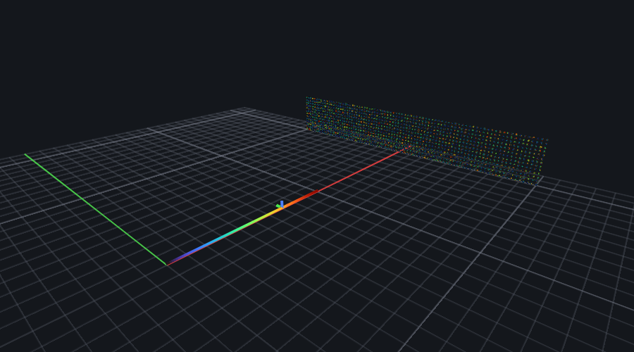

Replaying ROS 2 bags
ROS 2 records robot data in bags; since ROS 2 Iron the default format is MCAP. SpatialRender reads them natively (no ROS installation needed), rebuilds the TF frame tree, and replays point clouds, odometry, paths and GNSS on a timeline.
A bag to work with
So that this tutorial runs anywhere, we first record a short bag with MCAPWriter: a robot driving east at 1 m/s, a LiDAR seeing a wall, odometry and TF. A real bag from ros2 bag record works exactly the same way.
using SpatialRender
sec = 1_000_000_000
w = MCAPWriter("drive.mcap")
schema(name) = add_schema!(w, name)
tf = add_channel!(w, "/tf", schema("tf2_msgs/msg/TFMessage"))
odom = add_channel!(w, "/odom", schema("nav_msgs/msg/Odometry"))
cloud = add_channel!(w, "/lidar/points", schema("sensor_msgs/msg/PointCloud2"))
using Random
rng = Xoshiro(2)
wall = [Vec3f(20, y, z) for y in -10:0.25:10 for z in 0:0.25:3] # a wall 20 m east
for k in 0:100 # 10 s at 10 Hz
t = k * sec ÷ 10; x = k / 10
write_message!(w, tf, t, encode_tf([
StampedTransform(t, "map", "base_link", Vec3d(x, 0, 0), Quat()),
StampedTransform(t, "base_link", "lidar", Vec3d(0.5, 0, 1.5), Quat())]))
write_message!(w, odom, t, encode_odometry(StampedTransform(t, "map", "base_link", Vec3d(x, 0, 0), Quat())))
# the scan, in the lidar's own frame: the wall as seen from the robot
seen = [p - Vec3f(x + 0.5, 0, 1.5) + 0.02f0 * Vec3f(randn(rng, 3)...) for p in wall] # with sensor noise
write_message!(w, cloud, t, encode_pointcloud2(t, "lidar", seen))
end
close(w)Opening a bag
open_bag indexes the file (or a rosbag2 directory, including recordings split over several files) and adds a layer for each supported topic.
player = open_bag("drive.mcap")
player.bag # topics, types and message countsMCAPFile drive.mcap: 303 messages, 10.00 s, 2 chunks
/lidar/points sensor_msgs/msg/PointCloud2 101
/odom nav_msgs/msg/Odometry 101
/tf tf2_msgs/msg/TFMessage 101
player.sceneScene with 3 layers (frame: IdentityFrame)
StreamingPointCloud /lidar/points 1053 of 2000000 points, streaming
LineLayer /odom trail 100 polylines
LineLayer /odom pose 3 polylines
Supported topics:
| Message type | Shown as |
|---|---|
sensor_msgs/PointCloud2 | streaming cloud; each scan is placed through TF at its own timestamp |
nav_msgs/Odometry, geometry_msgs/PoseStamped | trajectory plus an axes marker at the current pose |
nav_msgs/Path | the latest path at the current time |
sensor_msgs/NavSatFix | GNSS track |
tf2_msgs/TFMessage | the frame tree |
Moving through time
seek! jumps to a time (seconds from the start); play! and tick! advance it. The scene always shows the moment the player is at.
seek!(player, 7.0)
camera = Camera(position = Vec3d(-6, -14, 10), target = Vec3d(10, 0, 1))
snapshot(player.scene; width = 900, height = 500, camera)
The robot at t = 7 s, with the last few scans of the wall
The wall is in the same place in every scan although the robot moved: each scan was transformed with the robot's pose at its timestamp.
In a window, replay does everything at once:
replay("drive.mcap") # Space: play/pause, ← →: seek, [ ]: speed, Home: restartReal recordings
Real bags are rarely complete, and the player is built for the common problems:
- Sensor frames missing from TF. Static transforms (the sensor mountings on
/tf_static) are often published once, before recording starts, so the bag doesn't contain them. The player then draws those sensors at the robot's base frame, with a warning, instead of hundreds of metres away. Supply the real mountings when you know them:
mount = StampedTransform(0, "base_link", "lidar", Vec3d(0.5, 0, 1.5), Quat())
player2 = open_bag("drive.mcap"; static_transforms = [mount])- Recording gaps. Trails are broken at gaps instead of jumping across them, and the robot's pose is not interpolated across gaps longer than
max_tf_gapseconds. - Throttled sensors. With
history = :auto(the default) enough scans stay visible for the sparsest LiDAR topic. - Data recorded in bursts. Playback skips stretches with no messages (
skip_gaps = true).
To look at the data itself, the lower-level pieces are available: open_mcap gives the message index, message_data a message's bytes, and decode_pointcloud2, decode_odometry, decode_tf and friends turn them into Julia values.
bag = open_mcap("drive.mcap")
m = first(x for x in bag.messages if bag.channels[x.channel].topic == "/lidar/points")
stamp, frame_id, points = decode_pointcloud2(message_data(bag, m))
println(length(points), " points in frame \"", frame_id, "\"")1053 points in frame "lidar"